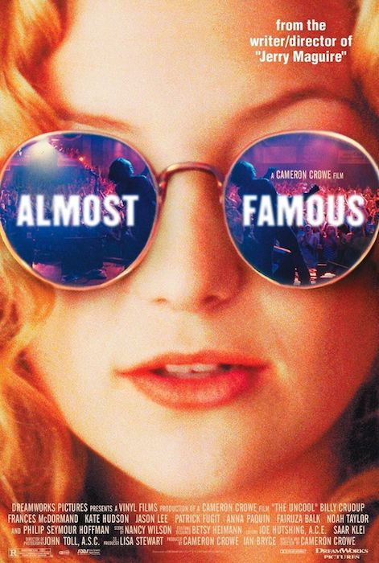

Almost Famous is a 2000 American comedy-drama film written and directed by Cameron Crowe and starring Billy Crudup, Frances McDormand, Kate Hudson, and Patrick Fugit. It tells the story of a teenage journalist writing for Rolling Stone in the early 1970s, his touring with the fictitious rock band Stillwater, and his efforts to get his first cover story published.
